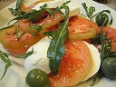

| Travel Photos / 旅行写真 |

Napoli / ナポリ |
Sep 22~28, 2007
Roma, Napoli |
Bangkok / バンコク |
Aug 13~16, 2006
Bangkok
|
Belize / ベリーズ |
Feb 15~28, 2006
Belize City, San Ignacio, Caye Caulker
|
Bolivia / ボリビア |
Mar 9~22, 2005
Sucre, Potosi, Uyuni, La Paz
旅記
|
Okinawa / 沖縄 |
Sep 26~Oct 2, 2004
石垣, 宮古 |
Singapore / シンガポール |
Jul 27~29, 2004 |
Kyoto / 京都 |
Jul 5~10, 2004
|
| Korea / 韓国 |
Jun 13~17, 2004 |
Maleysia / マレーシア |
Jun 3~6, 2004
Kerteh |
France / フランス |
Mar 1~14, 2004
Paris, Lyon, Dijon, Montpellier |
Egypt / エジプト |
Nov 2~8, 2003
Cairo, Luxor |
EU / 欧州4ヶ国 |
Oct 21~Nov 6, 2002
Netherlands; Amsterdam
Germany; Heidelberg, Munchen
England; Oxford, London
Ireland; Cork
手記 |
Morocco / モロッコ |
Apr 1~14, 2002
Rabat, Fez, Merzouga, Tinerhir, Marrakech, Casablanca |
Vietnam / ベトナム |
Sep 9~14, 2001
Ho Chi Minh
日記 |
Korea / 韓国 |
Apr 24~28, 2001
Seoul, 水原, 順天, 釜山
日記 |
| Indonesia / インドネシア |
Oct 1~13, 2000
Bogor, Jakarta, Yogyakarta, Bali
レポート |
| China / 中国 |
Mar, 1999
上海, 成都, 拉薩
関連サイト |
| China / 中国 |
Sep, 1998
天津, 北京, 上海, 昆明, 桂林, 大理
レポート |
| |